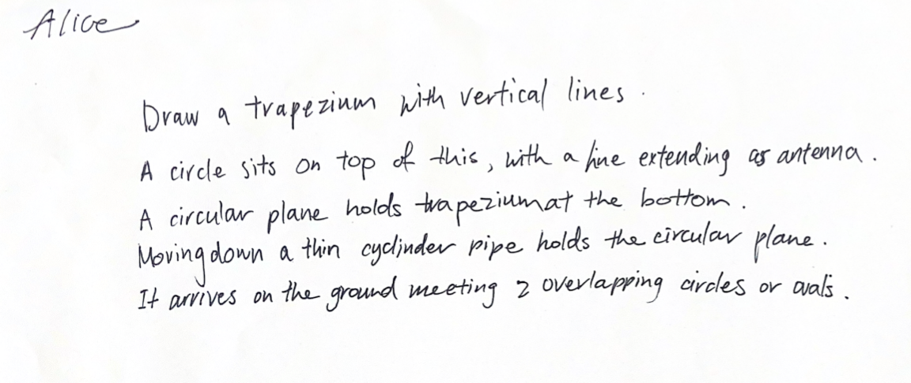
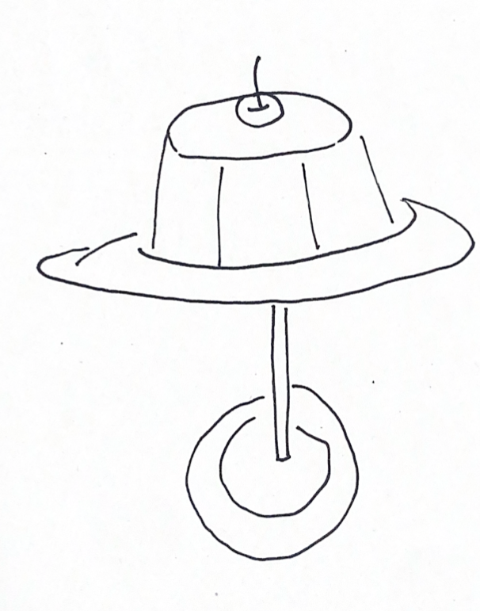
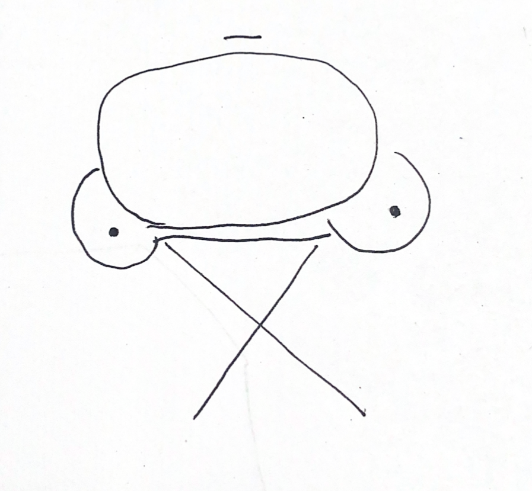
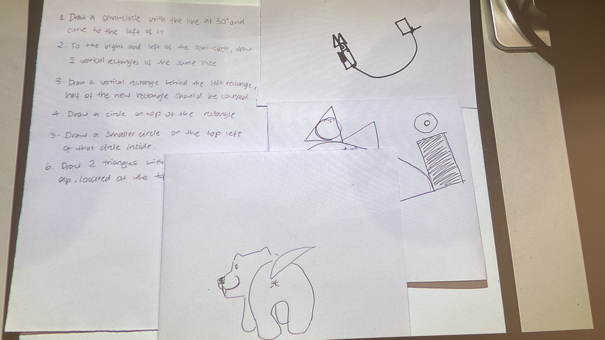

This exercise made me realise how much ambiguity lives inside words I thought were precise. In class we were introduced to the instructional art of Yoko Ono and Sol LeWitt, and I was presented with an exercise that involved drawing based on a set of instructions. I drew a random item, and wrote instructions on how to draw this without referring to the image.
The instruction felt clear when I wrote it, but it produced drastically different results. Yet they are all plausible once I saw how they got there! In turn I also drew another classmate's image based on instructions, and went in a completely different direction to the original image...
I liked the gap between human intention and interpretation. Natural language lets ambiguity slide through as opposed to code. [Although you could also get around it by specifying exact measurements like 5cm and 45 degrees.]

Intended drawing vs. human coded output - how instructions translate (and fail to translate) into form.


